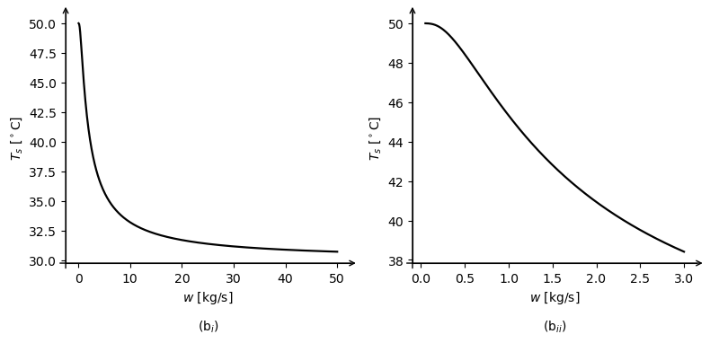

Nota de Estudo — Revisão de Newton-Raphson
Nota de Estudo — Revisão de Newton-Raphson
Autor: Fábio Magnani (fabio.magnani@ufpe.br)
Curso: Engenharia Mecânica - UFPE
Início do desenvolvimento: 31/08/2025
Primeira publicação: 08/09/2025
Versão Atual: v-2025-09-08-a (fase de teste técnico no Colab, teste didático-pedagógico com estudantes e início da revisão final de código/texto)
Objetivo
Revisar o Método de Newton-Raphson usando como exemplo um problema de trocador de calor de Design of Thermal Systems.
Referência
- Stoecker, W. F. Design of Thermal Systems, chap. 5, 3rd ed., McGraw-Hill, 1989.
Estrutura
- Enunciado do problema-exemplo (trocador de calor com condensação) e o seu modelo matemático.
- Análise de escala do problema-exemplo.
- Estudo paramétrico do problema-exemplo (\(U\) variável).
- Estudo paramétrico do problema-exemplo simplificado (\(U\) constante).
- Revisão do método de Newton-Raphson.
- Solução do problema-exemplo pelo método de Newton-Raphson.
- Discussões finais.
- Propostas de estudos adicionais.
Notação
- \(w\): vazão mássica [kg/s]
- \(Q\): potência térmica requerida [kW]
- \(f(w)\): função resíduo usada no método de Newton-Raphson [kW]
- \(T_e\), \(T_v\): temperaturas de entrada da água e do vapor [°C]
- \(c_p\): calor específico a pressão constante [kJ/(kg·K)]
- \(A\): área efetiva de troca térmica [m^2]
- \(h\): passo para a diferença finita à frente
Problema-exemplo: cálculo da vazão \(w\) de um trocador de calor com condensação para garantir a taxa de transferência de calor desejada
Enunciado físico: O trocador da Fig. 1 aquece água a partir da condensação de vapor. A água entra a \(T_e=30^\circ\mathrm{C}\), o vapor entra a \(T_v=50^\circ\mathrm{C}\), e o condensado sai também a \(50^\circ\mathrm{C}\). Queremos determinar a vazão mássica de água, \(w\) (kg/s), tal que o calor transferido seja \(Q=50\,\mathrm{kW}\). A área de troca é \(A=1{,}4\,\mathrm{m^2}\) e o coeficiente global de transferência de calor, baseado nessa área, é função de \(w\):
\[ \frac{1}{U}=\frac{0{,}0445}{w^{0{,}8}}+0{,}185 \qquad [\mathrm{m^2\,K/kW}]. \]
Pela 1a Lei aplicada ao lado frio, temos que:
\[ Q = w c_p (T_s - T_e) \tag{2} \]
A Equação do Trocador de Calor é:
\[ Q = U A \Delta T_{LM} = U A \frac{(T_v-T_s)-(T_v-T_e)}{\ln{\frac{(T_v-T_s)}{(T_v-T_e)}}} = U A \frac{(T_e-T_s)}{\ln{\frac{(T_v-T_s)}{(T_v-T_e)}}} \tag{3} \]
Comparando Eq.2 e Eq.3 vemos que:
\[ w c_p (T_s - T_e) = - U A \frac{(T_s-T_e)}{\ln{\frac{(T_v-T_s)}{(T_v-T_e)}}} \implies \frac{(T_v-T_s)}{(T_v-T_e)} = e^{-\frac{U A}{w c_p}} \implies (T_v-T_s) = (T_v-T_e) e^{-\frac{U A}{w c_p}} \tag{4} \]
Ou:
\[ (T_s-T_v) = - (T_v-T_e) e^{-\frac{U A}{w c_p}} + (T_e-T_e) \implies T_s = T_e + (T_v-T_e) - (T_v-T_e) e^{-\frac{U A}{w c_p}} \tag{5} \]
Que, finalmente, se transforma da Equação do Trocador de Calor com Condensação (i.e., o lado quente opera com temperatura constante):
\[ T_s = T_e + (T_v - T_e) \left(1 - e^{-UA/ w c_p}\right) \tag{6} \]
Substituindo a Eq. 6 na Eq.2, temos:
\[ Q = w c_p (T_v - T_e) \left(1 - e^{-UA/ w c_p}\right) \tag{7} \]
Reescrevendo a Eq.1:
\[ U = \frac{w}{0,0445 w^{0,2} +0,185 w} \tag{8} \]
Substituindo a Eq.8 na Eq.7, chegamos no modelo matemático do problema-exemplo:
\[ \boxed {Q = w c_p (T_v - T_e) \left[ 1 - e^{-\frac{A}{ c_p \left( 0,0445 w^{0,2} + 0,185 w \right) } } \right] } \tag{9} \]
Enunciado matemático: determine o valor de \(w\) que satisfaça a Eq.9 para os valores de \(Q=50\) kW; \(A=1,4 \text{m}^2\); \(c_p=4,2\) kJ/kg\(\cdot\)K; \(T_v = 50^\circ\mathrm{C}\) e \(T_e = 30^\circ\mathrm{C}\).
Análise de escala do modelo matemático
Para facilitar a análise, podemos escrever a Eq.9 assim: \[ Q(w)= w\,c_p\,\Delta T\,[\,1-e^{-\xi}\,] \tag{10} \]
Com:
\[
\Delta T=(T_v-T_e) \tag{11}
\]
e
\[ \xi(w)=\dfrac{A}{c_p\,(\,0{,}0445\,w^{0{,}2}+0{,}185\,w\,)} \tag{12} \]
Limite assintótico quando a vazão tende a zero
Quando a vazão tende a zero (\(w\to 0\)), vemos que \(\xi\to\infty\) e, consequentemente, \((1-e^{-\xi})\to 1\). Temos, então, que:
\[ w\to 0 \implies Q \to 0 \tag{13} \]
O que não nos ajuda muito. Vamos ver então o que acontece com a derivada de \(Q\). Derivando a Eq. 10 em relação a \(w\), alcançamos:
\[ Q'(w)=c_p\Delta T(1-e^{-\xi})-\Delta T A e^{-\xi}\frac{0,0089 w^{0,2}+0,185 w}{(0,0445 w^{0,2}+0,185 w)^2} \tag{14} \]
Portanto, como o segundo termo envolve uma exponencial multiplicada por uma potência, e como a exponencial domina a potência, temos que o segundo termo tende a zero. Em outras palavras:
\[ w\to 0 \implies Q' \to c_p\Delta T \tag{15} \]
Em outras palavras, quando a vazão é muito baixa, o calor é proporcional à vazão (\(Q\propto w\)). Logo, para uma primeira estimativa, linearizando a curva (usando \(w \approx \dfrac{Q}{c_p\,\Delta T}\)), podemos propor que a vazão para o fluxo \(Q=50\) kW pode ser estimada por \(w = 50/(4,2 \cdot 20) = 0,595\) kg/s.
Limite assintótico quando a vazão tende ao infinito
Quando a vazão tende ao infinito (\(w\to \infty\)), temos que \(w\,c_p\,\Delta T \to \infty\) ao mesmo tempo que \((1-e^{-\xi})\to 0\), e, por isso, precisamos de uma análise um pouco mais profunda. Primeiro, vemos que, quando a vazão cresce muito (\(w\to \infty\)), quem controla \(\xi\) é o termo \(0,185 w\). Então:
\[ w\to\infty \;\Rightarrow\; \xi(w)\approx \dfrac{A}{0{,}185\,c_p}\,\dfrac{1}{w} \tag{16} \]
Lembrando que a Série de Taylor é dada por:
\[ y(x)= y(a) + y'(a)(x-a) + \sum_{k=2}^{\infty}\frac{y^{(k)}(a)}{k!}\,(x-a)^k \tag{17} \]
E aplicando-a ao termo (\(1-e^{-\xi}\)), expandindo em torno de \(\xi=0\), obtemos:
\[ 1-e^{-\xi}=\xi-\tfrac{\xi^2}{2}+O(\xi^3)\sim \xi \tag{18} \]
Logo:
\[ w\to \infty \implies Q\to w c_p \Delta T \frac{A}{0,185 w c_p} \implies Q = \frac {A }{0,185} \Delta T \tag{19} \]
Então, quando a vazão cresce muito, podemos prever que a taxa de transferência de calor, \(Q\), tende ao valor de \(\frac{1,4}{ 0,185} 20 = 151,4\) kW.
Estudo Paramétrico 1 — influência de \(w\) em \(U\), \(T_s\) e \(Q\), considerando \(U\) variável
Vamos agora analisar numericamente como \(U\) (Eq.8), \(T_s\) (Eq.6) e \(Q\) (Eq. 7) se comportam em função de \(w\).
Os gráficos da Fig.2 são apresentados em duas colunas; a da esquerda com \(w\) variando em uma faixa maior [0 a 50], para enfatizar a assíntota para valores mais altos de \(w\) e também a forma total da curva; e a coluna da direita mostrando apenas a faixa mais próxima da raiz [0 a 3], o que nos permite tanto ver a raiz da equação (\(w \approx 0,7\)) quanto a assíntota para baixos valores de vazão.
Comportamento de \(U(w)\)
- Quando \(w\to 0\), vimos que o termo em \(w^{0{,}2}\) domina o denominador da Eq.8. Logo, \(U(w)\sim \dfrac{1}{0{,}0445}\,w^{0{,}8}\) (i.e., \(U(w)\) cresce com lei de potência).
- Para \(w\to\infty\), quem domina o denominador é o termo em \(w\). Então, \(U(w)\to \dfrac{1}{0{,}185}\approx 5{,}405\,\mathrm{kW/(m^2\,K)}\) (i.e., \(U(w)\) tende a um platô).
Nas figuras 2(a\(_{i}\)) e 2(a\(_{ii}\)), esses dois comportamentos aparecem claramente, primeiro como o crescimento rápido em baixas vazões, e depois com a saturação para altas vazões.
Assíntotas de \(Q(w)\) sobrepostas ao gráfico
- Quando \(w\to 0\), \(Q(w)\approx c_p\,\Delta T\,w\). Com os dados que temos, \(c_p\,\Delta T=4{,}2\times 20=84\,\mathrm{kW/(kg/s)}\).
A curva de \(Q\) coincide com essa reta muito perto de \(w=0\). - Quando \(w\to\infty\), \(Q(w)\to Q_{\max}\), com \(Q_{\max}=\dfrac{A}{0{,}185}\,\Delta T=\dfrac{1{,}4}{0{,}185}\times 20\approx 151{,}35\,\mathrm{kW}\). No gráfico, essa é a linha horizontal que a curva de \(Q\) se aproxima por baixo.
Nas figuras 2(b\(_{i}\)) e 2(b\(_{ii}\)), vemos como essas duas assíntotas explicam a curva geral de \(Q(w)\), i.e., crescimento quase linear no começo e saturação no fim.
Raiz provável para \(Q=50\,\mathrm{kW}\) em \(w\approx 0{,}7\)
- Como \(50\,\mathrm{kW}\ll Q_{\max}\approx 151{,}35\,\mathrm{kW}\), a solução está bem antes da saturação.
- Visualmente, a interseção \(Q(w)=50\) ocorre em \(w\approx 0{,}7\,\mathrm{kg/s}\), coerente com a aproximação linear \(w\approx Q/(c_p\Delta T)=50/84\approx 0{,}595\) e com a solução numérica que veremos mais abaixo (\(w\approx 0{,}693\)).
- Interpretação: ainda estamos no regime quase linear (\(Q\propto w\)), então controlar \(Q\) via \(w\) é eficiente nesse ponto.
Temperatura de saída \(T_s(w)\)
- Para \(w\) pequeno: \(\xi\) grande, \(1-\exp(-\xi)\to 1\) \(\Rightarrow T_s\approx T_v=50^\circ\mathrm{C}\) (a água quase atinge o vapor).
- Para \(w\) grande: \(\xi\) pequeno, \(1-\exp(-\xi)\sim \xi\propto 1/w\) \(\Rightarrow T_s\to T_e=30^\circ\mathrm{C}\) (tempo de residência curto).
Leitura de projeto
- As assíntotas dão duas informações chaves sem cálculo: inclinação inicial \(84\,\mathrm{kW/(kg/s)}\) e capacidade máxima \(\approx 151{,}35\,\mathrm{kW}\).
- O ponto de operação desejado (\(50\,\mathrm{kW}\)) fica muito abaixo do platô, com solução única e boa sensibilidade a \(w\).
- Se, no futuro, o alvo se aproximar do platô, aumentar \(w\) trará ganhos marginais; seria mais efetivo atuar em \(A\) ou em \(\Delta T\).
Estudo Paramétrico 2 — influência de \(w\) em \(T_s\) e \(Q\), considerando \(U\) constante.
Neste estudo, faremos algo muito parecido com o estudo anterior. No entanto, vamos considerar \(U\) constante (avaliado em \(w=0,7\). Nosso objetivo é compreender os efeitos que \(U\) variável tem sobre o comportamento do trocador de calor.
U(0.7) = 4.095096 kW/(m^2·K)Estudo Paramétrico 2 — comparação \(U_{w=0,7}\) (constante) vs. \(U(w)\) (variável)
Os resultados seguem o esperado. Com o coeficiente global de transferência de calor fixo em \(U_{w=0,7}\), o modelo: - Superestima \(Q\) e \(T_s\) para \(w<0{,}7\), pois o \(U(w)\) real é menor nessa faixa. - Subestima \(Q\) e \(T_s\) para \(w>0{,}7\), pois o \(U(w)\) real cresce em direção ao platô \(1/0{,}185\).
Comparando ao modelo com \(U(w)\), o erro próximo de \(w\approx 0{,}7\) é pequeno. Se considerarmos toda a faixa de operação, o erro em \(T_s\) atinge cerca de \(\sim5\%\), enquanto o erro em \(Q\) pode chegar a \(\sim30\%\) em vazões altas; evidenciando a importância de usarmos \(U(w)\) variavel se quisermos fazer análises globais.
Conclusão prática. Usar \(U\) constante é razoável para estudarmos o comportamento do trocador em torno do ponto onde \(U\) foi obtido. Já para investigar toda a faixa de vazão (ou operar longe de \(w\approx 0{,}7\)), o erro pode se tornar significativo; nesse caso, vamos preferir o modelo completo com \(U(w)\).
Cálculo do valor de \(w\) que satisfaz a condição \(Q=50\) kW.
Agora que já analisamos o comportamento analítico e paramétrico da Equação do Trocador de Calor com Condensação (Eq.9), vamos voltar ao problema inicial, que é determinar o valor de \(w\) que satisfaça a condição de \(Q=50\) kW. Observando a Eq.9, percebemos que ela é implícita em \(w\), quer dizer, não conseguimos isolar \(w\) de um lado da equação para podermos calcular o seu valor. A alternativa, então, é resolver essa equação por um método numérico.
Vamos escolher aqui o método de Newton-Raphson, por ser de rápida convergência, elegância analítica e simplicidade computacional; características que o tornaram o mais utilizado método para obtenção de raízes de equações.
Método de Newton–Raphson
Primeiro, vamos criar a função \(f(w)\) a partir da Eq.9:
\[ f(w) = Q - w c_p (T_v - T_e) \left[ 1 - e^{-\frac{A}{ c_p \left( 0,0445 w^{0,2} + 0,185 w \right) } } \right] \tag{20} \]
Desta forma, o problema matemático pode ser enunciado como: encontre o valor de \(w\) que leva \(f(w)\) a zero.
\[ f(w) = 0 \tag{21} \]
Dedução geométrica do método de Newton-Raphson
Vamos supor que estamos procurando a raiz de:
\[ y(x) = 0 \tag{22} \]
E digamos que podemos avaliar o valor da função \(y(x)\) e sua derivada \(y'(x)\) para qualquer valor de \(x\). Uma alternativa seria percorrer todos os valores de \(x\) até encontrar o local onde \(y(x)=0\). Esse método é conhecido como Busca Exaustiva. O problema com ele é a demora para encontrar a outra solução. Existem outros métodos já vistos nos cursos de Cálculo Numérico, como o Método da Bisseção.
No método de Newton-Raphson, a pessoa começa a procura por um determinado valor inicial \(x_1\) (esse valor em geral é arbitrado conhecendo a física do problema. No ponto \(x_1\), avaliamos \(y(x_1)\) e \(y'(x_1)\). Nesse momento, fazemos a aproximação de que a função \(y(x)\) é uma reta (ver a Fig.2), e então encontramos o valor de \(x_2\) que faria com que \(y_2\) fosse zero: \[ y'(x_1) = \left. \frac{dy}{dx}\right)_{x_1} = \frac{y(x_2)-y(x_1)}{x_2-x_1} = \frac{0-y(x_1)}{x_2-x_1} \tag{23} \]
O que implica em:
\[ x_2 = x_1 - \frac{y(x_1)}{y'(x_1)} \tag{24} \]

Mas logo percebemos que \(x_2\) não é a raiz de \(y(x)\), porque a curva não é uma reta (simplificação que fizemos para chegar à Eq.24) . No entanto, se tivermos escolhido um bom valor inicial, estaremos mais próximos da raiz. Fazemos então a mesma coisa no ponto 2, i.e., avaliamos \(y(x_2)\) e \(y'(x_2)\), traçamos uma reta e rumamos para o ponto 3 (como pode ser visto na Fig 3):
\[ x_3 = x_2 - \frac{y(x_2)}{y'(x_2)} \tag{24} \]
Generalizando, o Método de Newton-Raphson é um processo iterativo que segue a seguinte relação até chegarmos o mais próximo o desejado da raiz:
\[ x_{k+1} = x_{k} - \frac{y(x_k)}{y'(x_k)} \tag{24} \]
O Método de Newton-Raphson é bastante poderoso. Quando ele converge para a raiz, ele converge rapidamente. Quando ele diverge, há algumas estratégias (i.e., limitar os valores possíveis de \(x\)), mas vamos focar na mais simples e usual, que é iniciar com um valor inicial diferente.
Derivada numérica
Vemos na Eq.24 que é necessário calcular o valor da derivada. Isso pode ser feito de duas formas: derivada analítica, quando possível e fácil, ou então a partir de alguma aproximação numérica. A aproximação numérica mais comum é pelo método das diferenças finitas à frente, na qual aproximamos a derivada por diferenças simples:
\[ y'(x) = \frac{dy}{dx} = \lim_{h \to 0} \frac{y(x+h) - y(x)}{h} \approx \frac{y(x+h) - y(x)}{h} \tag{25} \]
Derivada analítica
Outra alternativa é calcular a derivada analítica. Para o problema exemplo deste notebook, temos que:
Sendo:
\[ f(w)=Q-w c_p \Delta T \left[ 1- e^{\xi} \right] \tag{26} \]
onde:
\[ \xi(w)=-\dfrac{A}{c_p\,[\,a\,w^{0.2}+b\,w\,]} \tag{27} \]
com \(a=0,0445\) e \(b=0,185\); e com:
\[ \Delta T=(T_v-T_e) \tag{28} \]
Então:
\[ f'(w)=-c_p \Delta T \left[ 1 - e^{\xi}-w e^{\xi} \xi'(w) \right] \]
Com:
\[ \xi'(w)=\frac{A (0.2 a w^{-0.8}+b)}{c_p \left[ a w^{0.2}+b w \right]^2} \]
Essa expressão serve como referência para comparar com a versão numérica. Vamos agora encontrar a raiz da Eq.24 por Newton-Raphson, usando a derivada numérica (por diferenças finitas à frente) e a derivada analítica.
Newton (dif. finitas): w = 0.691871 kg/s, f(w) = -7.105427e-15 kW
Newton (derivada analitica): w = 0.691871 kg/s, f(w) = -7.105427e-15 kW
f'(w≈0.691871): df=-5.368351e+01, analitica=-5.368356e+01, erro_rel=8.153e-07Discussão dos Aspectos Numéricos
Comportamento de Newton–Raphson neste problema
Com o palpite simples \[ w_0 \approx \frac{Q}{c_p\,\Delta T}, \] as iterações convergiram de forma rápida e estável para a raiz \(w^*\). Observou-se queda acentuada de \(|f(w_k)|\) a cada passo e sequência \(w_k\) rapidamente estabilizada. A suavidade de \[ f(w)=Q-w\,c_p\,\Delta T\,[1-\exp(\xi(w))],\qquad \xi(w)=-\frac{A}{c_p\,(a\,w^{0.2}+b\,w)}, \] no domínio visitado favoreceu esse comportamento.
Diferença entre as duas derivadas neste problema
A derivada analítica, \[ f'(w)=-c_p\,\Delta T\,[1-\exp(\xi)-w\,\exp(\xi)\,\xi'(w)],\qquad \xi'(w)=\frac{A\,(0.2\,a\,w^{-0.8}+b)}{c_p\,[a\,w^{0.2}+b\,w]^2}, \] e a aproximação por diferença finita à frente, \[ f'(w)\approx\frac{f(w+h)-f(w)}{h}, \] levaram ao mesmo \(w^*\) e com número de iterações muito parecido. Aqui isso acontece porque \(f\) é suave e o passo \(h\) foi estável.
Comportamento de Newton–Raphson em geral
Newton–Raphson é muito rápido quando há bom palpite, \(f\) e \(f'\) são regulares perto da raiz e a direção de passo é confiável. Fora dessas condições, pode oscilar, divergir ou sair do domínio, o que pode necessitar de técnicas adicionais mais robustas.
Diferença entre as duas derivadas em geral
A derivada analítica reduz iterações e evita a sensibilidade à escolha de \(h\); vale especialmente quando se busca tolerâncias finas ou quando avaliar \(f\) é caro. A diferença finita é universal e simples, mas equilibra erro de truncamento e arredondamento via \(h\) e pode reduzir a ordem efetiva de convergência.
Resumo final: quando disponível, use \(f'(w)\) analítica; quando não, diferença finita bem escolhida resolve. Primeiro faça funcionar, depois refine.
Discussão Final
Nesta nota de estudo, nós revisamos o Método de Newton-Raphson usando como exemplo um trocador de calor com condensação coeficiente global de transferência de calor (\(U\)) variando com a vazão (\(w\)). Seguimos os seguintes passos:
- Construção do modelo matemático
- Análise de assíntotas do modelo matemático nos limites de \(w\)
- Análise paramétrica de como várias grandezas (i.e., \(U\), \(T_s\) e \(Q\)) variam com o aumento da vazão
- Estudo da influência da variação de \(U\) com \(w\) em relação a um modelo com \(U\) constante
- Revisão do Método de Newton Raphson
- Cálculo numérico da derivada que usando a aproximação das diferenças finitas à frente
- Cálculo analítico da derivada que aparece em Newton-Raphson
- Análise do resultado obtido por Newton-Raphon
Desta forma, aproveitamos um exemplo real para revisar a construção de um modelo matemático, o estudo de suas assíntotas e do seu comportamento em função dos parâmetros, e finalmente encontramos a solução do problema utilizando um famoso método numérico.
Novos Exercícios Práticos
- Estimar \(U(w)\) com correlações empíricas
- Estudar a influência de \(A\), \(\Delta T\) e \(c_p\) no comportamento do trocador de calor.
- Experimente outros valores iniciais de \(w\) para estudar a convergência de Newton-Raphson.
- Procure na literatura científica dados experimentais de U(w), ajuste os dados por mínimos quadrados e refaça este estudo.
- Estime a perda de carga no trocador em função de \(w\) e estime os custos de bombeamento para cada condição.
- Faça uma propagação de incertezas dos parâmetros para \(W\) e para a raiz de f(W).
- Implemente outros métodos e compare com o Newton-Raphson que vimos nesta nota de estudo
- Clássicos (e.g., Bisseção, Busca Exaustiva).
- Newton-Raphson e variações (e.g., Secante, Newton Amortecido, Newton Safeguarded).
- Alternativos (e.g., Ponto Fixo, Regula Falsi, Brent)
- Clássicos (e.g., Bisseção, Busca Exaustiva).
- Pesquise outros métodos de obtenção de raizes de funções.